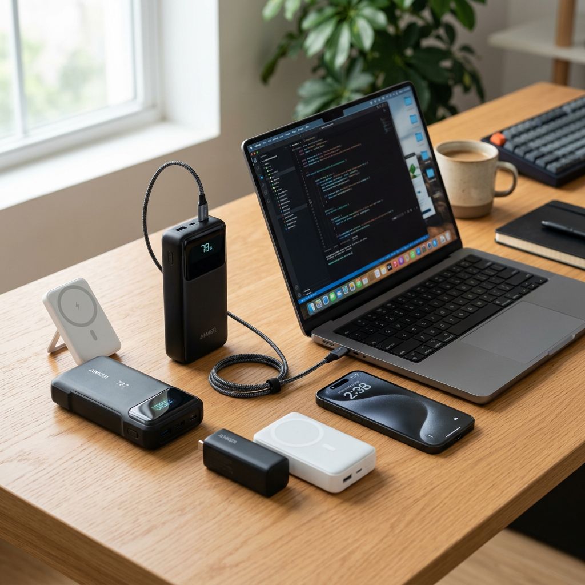
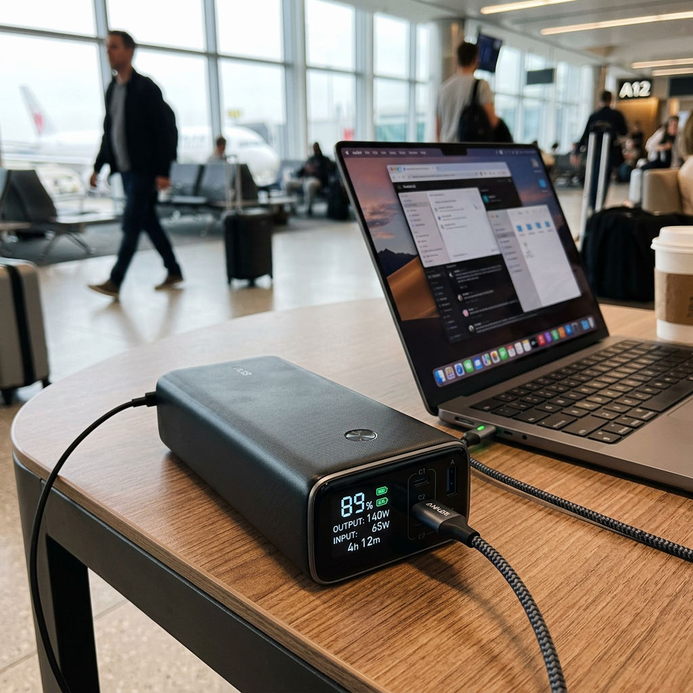
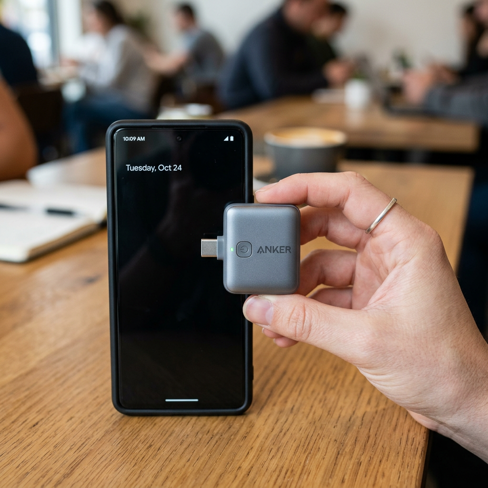

The Ultimate Anker Portable Charger Guide: Never Run Out of Power Again
The Panic of 1%: Why Your Choice of Portable Power Matters
We have all been there. You are in the middle of a critical business call, navigating a foreign city, or capturing a once-in-a-lifetime moment, and your screen flashes that dreaded red battery icon. In a world where our lives are tethered to our devices, a dead battery isn't just an inconvenience—it is a total shutdown of your productivity and connection.
Choosing a generic power bank is a gamble that often leads to slow charging speeds, bulky designs, and batteries that lose their capacity within months. That is why savvy users turn to Anker. As the global leader in charging technology, an Anker portable charger offers the reliability, speed, and safety protocols required to keep your expensive electronics running at peak performance.

Quick Comparison: Finding Your Perfect Anker Match
Before we dive into the technical specifications, use this comparison table to identify which Anker portable charger aligns with your specific lifestyle and power requirements.
| Product Name | Key Advantage | Best For | Verdict |
|---|---|---|---|
| Anker Prime 27,650mAh (250W) | Ultra-High Output | Laptops & Power Users | The Professional Choice |
| Anker MagGo (Qi2 Certified) | Wireless Convenience | iPhone & Travel | The Best for iPhone |
| Anker Nano (Built-In USB-C) | Pocket-Sized Portability | Daily Commutes | The Minimalist Pick |
Deep Dive: Which Anker Portable Charger Is Right for You?
To make the right investment, you need to understand how these devices perform in real-world scenarios. Here is a breakdown of the top contenders in the Anker lineup.
1. Anker Prime 27,650mAh Power Bank (250W) – The Professional’s Powerhouse
If you are a digital nomad, a creative professional, or someone who travels with multiple high-drain devices, the Anker Prime is the gold standard. This isn't just an Anker portable charger; it is a portable power station. With a massive 250W total output, it can charge a 16-inch MacBook Pro to 50% in under 30 minutes.
- Massive Capacity: 27,650mAh provides enough juice to charge an iPhone nearly 5 times or a laptop over 1.5 times.
- Smart App Control: Monitor your charging status, optimize battery life, and even locate your power bank via Bluetooth.
- Rapid Recharge: Pair it with a 100W charger to refill the power bank itself in record time.
The Anker Prime is designed for those who cannot afford to be tethered to a wall outlet but need to maintain a full mobile office setup.
Check Price on Official Store
2. Anker MagGo Power Bank (Qi2 Certified) – The iPhone User’s Best Friend
Cables are the enemy of convenience. The Anker MagGo utilizes the latest Qi2 certification to provide 15W fast wireless charging that snaps directly onto the back of your MagSafe-compatible iPhone. It is the perfect Anker portable charger for users who want a seamless, one-handed charging experience.
- Qi2 Certified: Double the wireless charging speed of standard 7.5W magnetic chargers.
- Built-in Stand: Prop your phone up to watch videos or join video calls while it charges.
- Smart Display: Easily check your remaining battery percentage and estimated full-charge time.
For the traveler who wants to keep their setup light and wire-free, the MagGo is an essential accessory that feels like a natural extension of your phone.
Check Price on Official Store3. Anker Nano Power Bank – The Ultimate Minimalist Companion
Sometimes, the best power bank is the one you don't even notice you're carrying. The Anker Nano features a clever, foldable built-in USB-C connector, eliminating the need to carry an extra cable. It is small enough to fit into a pocket or a small clutch, making it the ideal Anker portable charger for nights out or daily commutes.
- Ultra-Compact: Roughly the size of a lipstick or a small lighter.
- 22.5W Fast Charging: Despite its size, it supports rapid charging for most modern smartphones.
- Eco-Friendly: Designed with sustainability in mind, utilizing recycled materials without compromising durability.
The Nano is for the person who wants "emergency insurance" for their battery without the bulk of a traditional power bank.
Check Price on Official Store
How to Choose Your Ideal Charger
When selecting your Anker portable charger, consider these three factors:
- Device Compatibility: Do you need to charge a laptop (Prime), an iPhone wirelessly (MagGo), or a standard USB-C phone (Nano)?
- Capacity vs. Weight: High capacity (Prime) means more weight. Low weight (Nano) means fewer total charges.
- Charging Speed: If you are always on the move, look for high-wattage outputs (20W+) to minimize the time your phone is attached to the battery.
Final Verdict: Power Without Compromise
In the battle against the low-battery notification, Anker remains the undisputed champion. If you need raw power for multiple devices, the Anker Prime 27,650mAh is the clear winner. For iPhone enthusiasts who value wireless freedom, the MagGo is a game-changer. And for those who need a light, reliable backup for daily use, the Anker Nano is the smartest choice.
Don't wait until your screen goes black. Secure your power source today and experience the freedom of a truly mobile lifestyle.